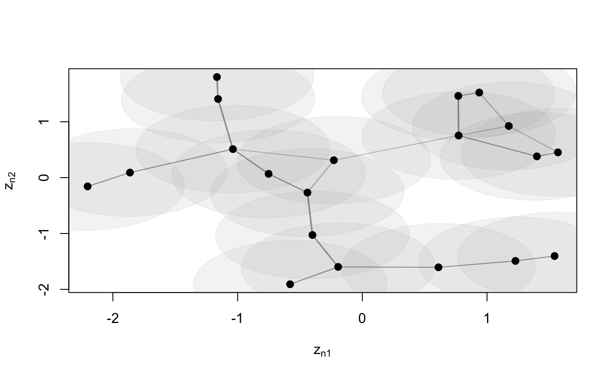
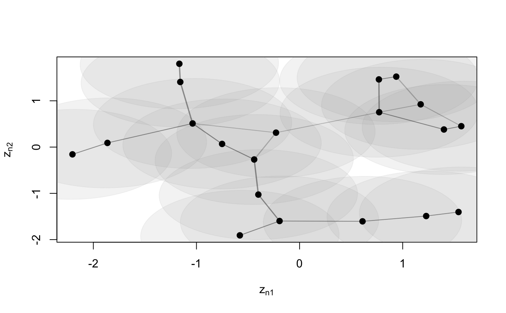

Function to plot an object of class 'lsm'
# S3 method for lsm plot(x, Y, drawCB = FALSE, dimZ = c(1, 2), colPl = 1, colEll = rgb(0.6, 0.6, 0.6, alpha = 0.1), LEVEL = 0.95, pchplot = 20, pchEll = 19, pchPl = 19, cexPl = 1.1, arrowhead = FALSE, curve = NULL, xlim = NULL, ylim = NULL, ...)
| x | object of class |
|---|---|
| Y | ( |
| drawCB | draw confidence bounds |
| dimZ | dimensions of the latent variable to be plotted. Default |
| colPl |
|
| colEll |
|
| LEVEL | levels of confidence bounds shown when plotting the ellipses. Default |
| pchplot | Default |
| pchEll |
|
| pchPl |
|
| cexPl |
|
| arrowhead | logical, if the arrowed are to be plotted. Default |
| curve | curvature of edges. Default |
| xlim | range for x |
| ylim | range for y |
| ... | Arguments to be passed to methods, such as graphical parameters (see |
